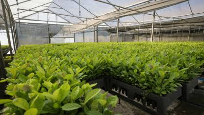

Como a Erva-Mate Moldou o Paraná
A história da erva-mate no Paraná é muito maravilhosa do que parece a primeira vista. Antes de virar aquele hábito diário do chimarrão ou do tereré com os amigos, a planta já era sagrada para os povos indígenas Guarani e Kaingang. Com o tempo, o povo percebeu o valor da planta e a erva-mate acabou virando a maior fonte de dinheiro da região no século XIX. Foi esse "ouro verde" que ajudou a potencializar o desenvolvimento do estado, financiar estradas e até impulsionar a independência política do Paraná.

O Contexto Histórico da Erva-Mate no Paraná
Para entender como o Paraná virou o que é hoje, basta olhar para a erva-mate. Tudo começou bem lá atrás, quando os povos indígenas Guarani e Kaingang já reinavam quando o assunto era o consumo da planta. Quando os colonizadores chegaram, entenderam a importância da planta e transformaram essa tradição em um mercado gigante no século XIX. A erva-mate deu tanto retorno financeiro que acabou virando o combustível principal para a independência do estado em 1853, ajudando a erguer as primeiras grandes cidades e estradas da região.

A Força Cultural da Erva-Mate no Paraná
A erva-mate no Paraná é muito mais do que só uma bebida pra passar o tempo, é a cara da cultura paranaense. Esse costume, que veio dos povos indígenas, virou um símbolo de união que passa de geração em geração. Seja no chimarrão bem quente no inverno ou no tereré trincando de gelado no verão, juntar os amigos para conversar e passar a cuia é o jeito mais autêntico do paranaense demonstrar amizade, acolhimento e orgulho das suas raízes.

Como o Ciclo da Erva-Mate Levantou o Paraná
O Ciclo da Erva-Mate foi o período de maior auge econômico do Paraná entre os séculos XIX e XX, transformando a planta em algo muito maior. O negócio deu tão certo que a produção e a exportação explodiram, trazendo uma grande quantidade de dinheiro à região. Foi essa era de ouro que financiou as primeiras grandes ferrovias (como a Paranaguá-Curitiba), pagou a construção de palácios históricos e deu o empurrão financeiro que o estado precisava para crescer e se estruturar de verdade.
